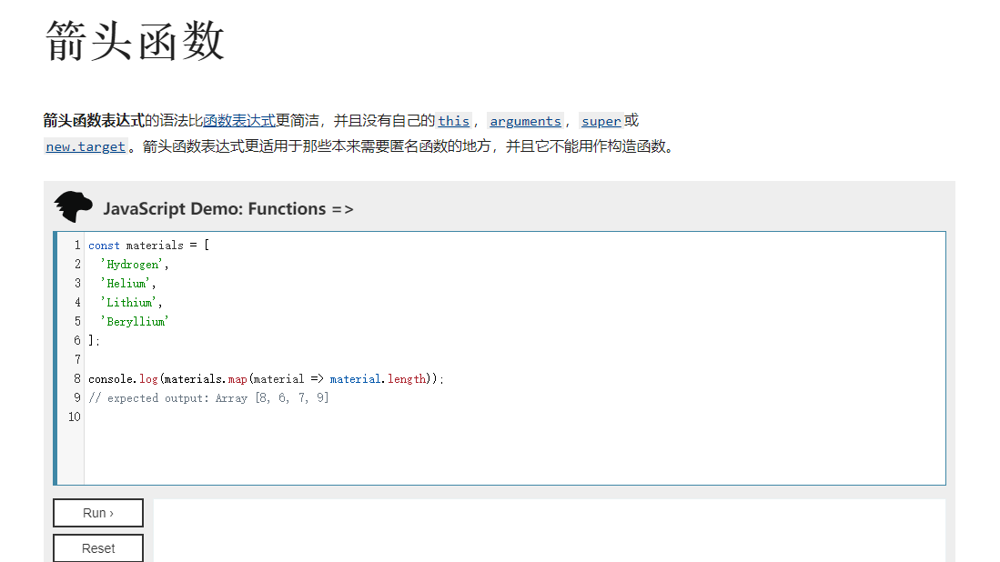

React一些学习
五月 30, 2021
说实话明年我真的不想做前端了，又累还要被吐槽简单。
这次自己的前端用到的技术栈还好，
路由管理： umi
前端展示： antd
记录一下自己遇见的知识：
我觉得最主要的就是hook，如何使用好hook是很重要的。说几个自己常用的：
useState
常见形式：
const [data, setData] = useState([]);
这个可太好用了，意思是定义了data，并直接定义了一个set方法，并且规定了State的返回期待为一个数组。
该hook一般搭配useEffect 来使用。
useEffect
常用情况：
基本上只要用到了异步，轮询你都必须接触到这个hook。具体例子如下：
1 | useEffect( |
它可以帮助你在初始化页面的时候进行一次数据的采集，如果第二个参数为你的期望值，如果与期望值不同的话就会重新尝试获取数据，换句话说它可以做到两个事情
- 开局替你获取数据
- 使用轮询的方式刷新数据
箭头函数
一开始的时候我不会写，所以很多时候别人的工程代码也很难看懂，但是当我明白之后发现还是相当好用的，他最大的好处就是让你从this这个扯淡的东西摆脱出来了。
1 | <Menu.Item key="1" onClick={()=> history.push('/admin/unitControl')} >主机管理</Menu.Item> |

附上官方的url：
1 | https://developer.mozilla.org/zh-CN/docs/Web/JavaScript/Reference/Functions/Arrow_functions |
在箭头函数出现之前，每一个新函数根据它是被如何调用的来定义这个函数的this值：
- 如果是该函数是一个构造函数，this指针指向一个新的对象
- 在严格模式下的函数调用下，this指向undefined
- 如果是该函数是一个对象的方法，则它的this指针指向这个对象
- 等等
This被证明是令人厌烦的面向对象风格的编程。(这句话太对了，如果你项目工程一大this就很扯)
其他感觉没有啥了，react的官网的文档啊，真的是所有文档的典范，写的太清晰了。
查看评论